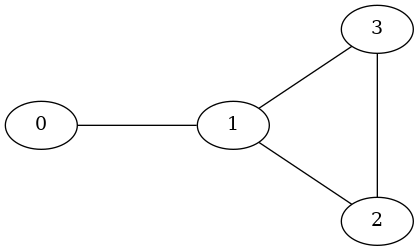

qwalk.coined.Coined#
- class qwalk.coined.Coined(adj_matrix)[source]#
Manage an instance of the coined quantum walk model on general unweighted graphs.
Methods for managing, simulating and generating operators of the coined quantum walk model for general graphs are available.
For implementation details, see the Notes Section.
- Parameters:
- adj_matrix
scipy.sparse.csr_array Adjacency matrix of the graph on which the quantum walk occurs.
- adj_matrix
- Raises:
- TypeError
if
adj_matrixis not an instance ofscipy.sparse.csr_array.
Notes
The recommended parameter type is
scipy.sparse.csr_arrayusingdtype=np.int8with 1 denoting adjacency and 0 denoting non-adjacency. If any entry is different from 0 or 1, some methods may not work as expected.For more information about the general general Coined Quantum Walk Model, check Quantum Walks and Search Algorithms’s Section 7.2: Coined Walks on Arbitrary Graphs [1].
The Coined class uses the arc notation and the Hilbert space \(\mathcal{H}^{2|E|}\) for general Graphs. That is, for a given graph \(G(V, E)\), the walk occurs in the graph \(\vec{G}(V, A)\) where
\[\begin{align*} A = \bigcup_{(v,u) \in E} \{(v, u), (u, v)\}. \end{align*}\]Matrices and states respect the sorted arcs order, i.e. \((v, u) < (v', u')\) if either \(v < v'\) or \(v = v'\) and \(u < u'\) where \((v, u), (v', u')\) are valid arcs.
For example, the graph \(G(V, E)\) shown in Figure 1 has adjacency matrix
adj_matrix.>>> import numpy as np >>> adj_matrix = np.matrix([[0, 1, 0, 0], [1, 0, 1, 1], [0, 1, 0, 1], [0, 1, 1, 0]]) >>> adj_matrix matrix([[0, 1, 0, 0], [1, 0, 1, 1], [0, 1, 0, 1], [0, 1, 1, 0]])
Figure 1#
The corresponding arcs are
>>> arcs = [(i, j) for i in range(4) for j in range(4) if A[i,j] == 1] >>> arcs [(0, 1), (1, 0), (1, 2), (1, 3), (2, 1), (2, 3), (3, 1), (3, 2)]
Note that
arcsis already sorted, hence the labels are>>> arcs_labels = {arcs[i]: i for i in range(len(arcs))} >>> arcs_labels {(0, 1): 0, (1, 0): 1, (1, 2): 2, (1, 3): 3, (2, 1): 4, (2, 3): 5, (3, 1): 6, (3, 2): 7}
The arcs labels are illustrated in Figure 2.
![digraph {
0 [pos="0,0!"];
1 [pos="2,0!"];
2 [pos="3.5,-1!"];
3 [pos="3.5,1!"];
0 -> 1 [headlabel=0 labeldistance=4.75 labelangle=-10];
1 -> 0 [headlabel=1 labeldistance=4.75 labelangle=-10];
1 -> 2 [headlabel=2 labeldistance=4.75 labelangle=-10];
1 -> 3 [headlabel=3 labeldistance=4.75 labelangle=-10];
2 -> 1 [headlabel=4 labeldistance=4.75 labelangle=-10];
2 -> 3 [headlabel=5 labeldistance=5.5 labelangle=-7];
3 -> 1 [headlabel=6 labeldistance=4.25 labelangle=-10];
3 -> 2 [headlabel=7 labeldistance=5.5 labelangle=-7];
}](../../_images/graphviz-bd621f7314d662064539d81e372288594cb015f0.png)
Figure 2#
If we would write the arcs labels respecting the the adjacency matrix format, we would have the matrix
adj_labels. Intuitively, the arcs are labeled in left-to-right top-to-bottom fashion.>>> adj_labels = [[arcs_labels[(i,j)] if (i,j) in arcs_labels else '' for j in range(4)] ... for i in range(4)] >>> adj_labels = np.matrix(adj_labels) >>> adj_labels matrix([['', '0', '', ''], ['1', '', '2', '3'], ['', '4', '', '5'], ['', '6', '7', '']], dtype='<U21')
For consistency, any state \(\ket\psi \in \mathcal{H}^{2|E|}\) is such that \(\ket\psi = \sum_{i = 0}^{2|E| - 1} \psi_i \ket{i}\) where \(\ket{i}\) is the computational basis state associated to the \(i\)-th arc. In our example, the state
>>> psi = np.matrix([1/np.sqrt(2), 0, 1j/np.sqrt(2), 0, 0, 0, 0, 0]).T >>> psi matrix([[0.70710678+0.j ], [0. +0.j ], [0. +0.70710678j], [0. +0.j ], [0. +0.j ], [0. +0.j ], [0. +0.j ], [0. +0.j ]])
corresponds to the walker being at vertex 0 and the coin pointing to vertex 1 with associated amplitude of \(\frac{1}{\sqrt 2}\), and to the walker being at vertex 1 and the coin pointing to vertex 2 with associated amplitude of \(\frac{\text{i}}{\sqrt 2}\).
Todo
Add option: numpy dense matrix as parameters.
Add option: networkx graph as parameter.
References
[1]Portugal, Renato. “Quantum walks and search algorithms”. Vol. 19. New York: Springer, 2013.
Methods
coin_operator([coin, coin2, vertices2])Generate a coin operator based on the graph structure.
evolution_operator([persistent_shift, hpc, coin])Create the standard evolution operator.
Create the flip-flop shift operator (\(S\)) based on the
adj_matrixattribute.oracle(vertices[, oracle_type])Create the oracle that marks the given vertices.
probability_distribution(states)Compute the probability distribution of given states.
search_evolution_operator(vertices[, ...])Create the search evolution operator.
simulate_walk(evolution_operator, ...[, ...])Simulates quantum walk by applying
num_stepstimes theevolution_operatorto theinitial_coidition.state(entries[, type])Generates a valid state.
Alias for
uniform_state.Generate the uniform state.